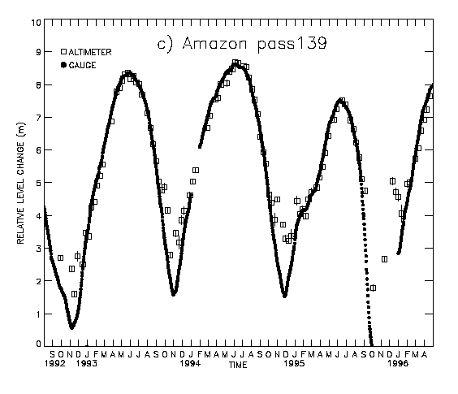
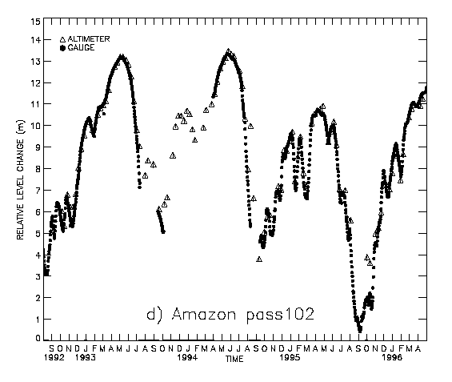

Summary
This project will utilize satellite radar altimetry
to derive three surface water state variables; water level, water depth, and
extent of inundation, which will aid in several studies of Amazon Basin
hydrology and climatology. A 9-year time series, with a 10-day time step will be
constructed for these variables, enabling the monitoring of large-scale seasonal
to interannual variations of the main river, its floodplain and tributaries, and
inland wetland regions. In addition, the progression of peak flow flood waves
and the gradient of the main river stem will be deduced. The contribution of
altimetry to discharge estimates will also be examined.
Method
Unhindered by time of day, weather, vegetation or
canopy cover, satellite radar altimeters can retrieve surface water height
information as the satellite orbits the Earth. All retrieved heights are
determined with respect to one common reference datum. Due to the repeat nature
of the satellite orbit, they are also capable of monitoring the level changes of
large lakes, rivers, inland seas and wetlands, during the lifetime of the
satellite. This capability has been applied in several recent test case studies,
including the Amazon Basin, with validated techniques.
Instruments and Potential Accuracies
Altimetric height accuracies, spatial density and
temporal resolution are instrument dependent. The best accuracy for rivers and
wetlands is ~10cm rms, from the currently operating TOPEX/Poseidon satellite
whose data has a temporal resolution of ~10days (Birkett, 1998). However, the
ERS missions provide the greatest coverage of the Amazon Basin, and potentially
can acquire rivers of ~0.5km width and larger. With combined results from the
1990's ERS-1, ERS-2, and TOPEX/Poseidon missions, and from the two new instruments,
Jason-1 and ENVISAT, an altimetric data set spanning a time period greater than
10 years can be constructed for the Amazon Basin. Altimetry can thus improve
systematic observation on both a regional and basin scale, attaining water level
knowledge for river and wetland regions where there is poor accessibility and/or
low gauge density.
Applications
In addition to directly addressing the LBA priority
topics 2.3 (Testing remote sensing algorithms for estimation of surface state
variables) and 2.5 (Provision of missing surface data for documentation of
regional water cycles), this study will contribute to priority topics 2.1, 2.2,
4.1 and 4.4, through the provision of additional or new data for calibration and
validation. Specific relevance will be to the following:
a) Regional to continental scale surface
hydrology, including stream discharge, runoff estimation, and river routing.
b) Surface energy and water balance, and land
atmosphere interactions.
c) Biogeochemical processes.
All derived results will be made accessible to
LBA participants via a maintained World Wide Web site and/or ftp database.
Relevant References
Birkett, C.M., Radar altimetry: A new concept in
monitoring lake level changes, EOS Trans. 75, No.24, pp.273-275, 1994.
Birkett, C.M., The contribution of TOPEX/POSEIDON
to the global monitoring of climatically sensitive lakes, JGR-Oceans, Vol.100,
C12, pp.25,179-25, 204, 1995a.
Birkett, C.M., The contribution of the TOPEX
(NRA) radar altimeter to the global monitoring of large rivers and wetlands,
Water Resour. Res., 34, No.5, pp.1223-1240, 1998.
Birkett, C.M., Murtugudde, R. and T. Allan,
Indian Ocean climate event brings floods to East Africa's lakes and the Sudd
Marsh, In Press, Geoph. Res. Letters, 1999.
Cazenave, A., Bonnefond, P., Dominh, K., and
Schaeffer, P., Caspian sea level from Topex- Poseidon altimetry: Level now
falling, Geophy. Res. Letters, 24, No.8, pp.881-884, 1997.
Dalton, J.A., and Kite, G.W., A first look at
using the TOPEX/POSEIDON satellite radar altimeter for measuring lake levels,
In: Remote Sensing in Hydrology, Proc. Symp. No.14, NHRI, Saskatoon, Canada, ed.
G.W. Kite, A. Pietroniro and T.D. Pultz, pp.105-112, 1995.
Koblinsky, C.J., R.T. Clarke, A.C. Brenner, and
Frey, H., Measurement of river level variations with satellite altimetry, Water
Resour. Res., 29(6), 18391848, 1993.
Morris, C.S., and Gill, S.K., Variation of Great
Lakes water levels described from Geosat altimetry, Water Resources Research,
30, No.4, pp.1009-1017, 1994.
Rapley, C. G., Guzkowska, M.A.J., Cudlip, W.,
and Mason, I.M., An exploratory study of inland water and land altimetry using
Seasat data, ESA Report No. 6483/85/NL/BI, 1987.
Figures
The Figures below show radar altimetric results
from the currently operating TOPEX/Poseidon satellite. Time series of relative
river height variations have been derived for two satellite passes over the main
river branch, and are compared with standard river stage data from conventional
gauge.


March 1999